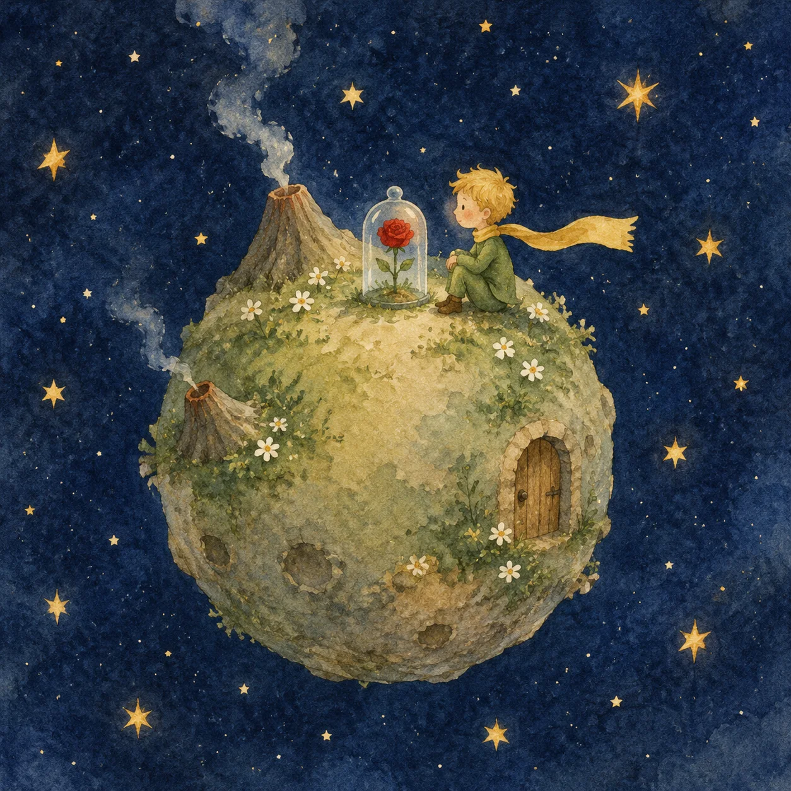
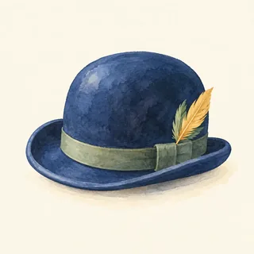
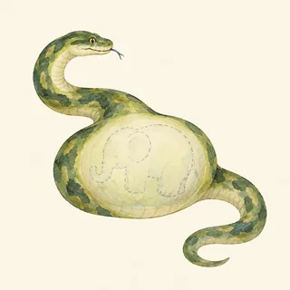
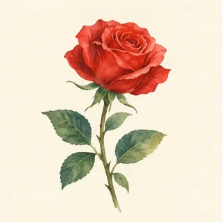
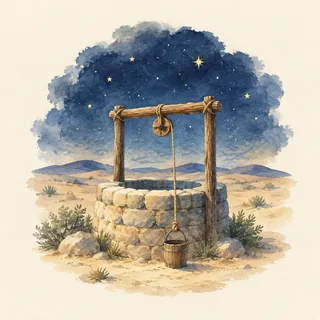
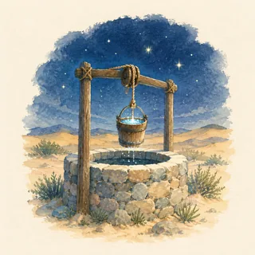

ASTÉROÏDE B-612 宇宙很大。我的星球，很小。LE PETIT PRINCE · A JOURNEY AMONG THE STARS
小王子
星间漫游
一场献给曾经是孩子的大人的旅行。
出发吧，去寻找那颗属于你的星星。
戴上耳机，打开声音。让世界，慢一点。
把时间，留给重要的事。
九段故事，七次小小的相遇。
你可以一路漫游，也可以从星图前往任何一站。
CHAPITRE 01 · LE CHAPEAU
大人们说，那是一顶帽子
✦ ✦ ✦所有的大人都曾经是孩子——只是很少有人记得这一点。
六岁那年，我画了人生中的第一幅画：一条蟒蛇吞下了一头大象，肚子撑得鼓鼓的。我把这幅杰作拿给大人们看，问他们看了怕不怕。他们说：「怕？一顶帽子有什么可怕的。」
我又画了第二幅——把蟒蛇的肚子画开，让大人们看清里面的大象。可他们劝我别再画了，去学地理、历史、算术和语法。就这样，六岁那年，我放弃了当画家这份伟大的职业。
后来我成了飞行员，飞过许多地方，见过许多「正经人」。每当遇到一个看起来还算清醒的大人，我就拿出第一幅画试探他。他们总是说：「这是一顶帽子。」于是我不再和他们谈蟒蛇、星星和原始森林——我谈桥牌、高尔夫、领带。他们就很高兴，觉得认识了一个通情达理的人。
INTERLUDE · 一幅画的两种看法


大人们看到的，永远是一顶帽子。
CHAPITRE 02 · B-612
一颗比房子大不了多少的星球
✦ ✦ ✦
花是柔弱的，天真的。她们尽全力保护自己——用那几根刺。
在小行星 B-612 上，住着一位小王子。星球很小——两座活火山刚好拿来热早饭，剩下的一座死火山当凳子坐，再挤进一朵玫瑰，就差不多满了。
玫瑰是在某个清晨忽然出现的。她挑了好看的盛装，慢吞吞地梳妆，然后打着哈欠说：「我刚刚睡醒，请你原谅，我的花瓣还乱着呢。」小王子从来没有见过这么好看的花。
他唯一的消遣，是看日落。星球很小，只要把椅子往前挪几步，就能再看一次黄昏。「有一天，」他说，「我看了四十四次日落。」过了一会儿，他又轻轻地说：「你知道的……人难过的时候，就会喜欢看日落。」
INTERLUDE · 玫瑰与玻璃罩

她抖了抖刺，轻声说：「你看，我可是和小王子一起看过日落的玫瑰。」
CHAPITRE 03 · LES BAOBABS
每天早上，给星球梳洗
✦ ✦ ✦
等到它长成大树，就是一场灾难。所以，要在它还是幼苗的时候动手。
猴面包树的幼苗，和玫瑰的幼苗长得一模一样。如果发现得太晚，就再也拔不掉了——它的根会撑满整个星球，把它撑得四分五裂。
「这是纪律，」小王子说。「早上梳洗完毕，就要认真地给星球梳洗。拔猴面包树这件事，要趁早。」
把星球梳洗好，他才去看玫瑰——这是他一天里最认真、也最柔软的两种时刻：先对付危险，再照顾唯一。
INTERLUDE · 清晨的拔草
星球轻了一点，也安全了一点。小王子拍了拍手上的土，去看他的玫瑰。
已拔除 0 / 3
CHAPITRE 04 · LE DÉPART
他利用一群候鸟，离开了家
✦ ✦ ✦她不肯说挽留，只肯说：你要照顾好你自己。
走的那天早上，他给玫瑰浇了最后一次水，替她把玻璃罩盖好，又把两座活火山的烟囱通了一遍——活的火山热早饭，死的那座当凳子，一个都不能怠慢。
临走那晚，他最后一次看日落。这一次不必搬椅子——站在星球的东边缘，黄昏会自己走过来，安静地宣示主权。他看了很久，久到玫瑰在身后轻轻地咳嗽了一声。
玫瑰没有哭。「把罩子拿开吧，」她说，「我不再需要它了。我有刺，而且，我从来不怕夜风。」——其实她只是不想让他看见自己掉眼泪。花都是这样的：嘴上很硬，心很软。
三座火山冒了冒烟，算作挥手。候鸟起飞的时候，小王子回头看了一眼——只一眼。他知道自己还会回来，只是不知道要经过多少颗星球，和多少场日落。
CHAPITRE 05 · LES GRANDES PERSONNES
325、326、327、328、329、330 号星球
✦ ✦ ✦
「大人们真是奇怪极了。」——他在旅行日志里写下这一行。
他先后拜访了六颗星球。每一颗上都只住着一个大人——星球小得装不下别的东西，所以每个大人，都只能牢牢地成为一件事。
大人们热爱数字。你对他们说起一位新朋友，他们从不问：「他说话的声音好不好听？他喜欢什么游戏？」他们问：「他几岁？有几个兄弟？体重多少？」——好像知道了这一串数字，就算认识了一个人。
还有的大人，从没闻过一朵花，从没抬头看过一颗星星，也从来没有爱过谁——他整天算加法，把算出来的数字锁进抽屉。小王子觉得，他不像一个人，倒像一只蘑菇。
INTERLUDE · 点亮六颗小星球
CHAPITRE 06 · LA TERRE
第七颗星球，叫地球
✦ ✦ ✦
一个人的骄傲，有时候只值五千朵一模一样的花——直到有人教他换一种方式去看。
地球很大。上面有一百一十一位国王，七千个地理学家，九十万个商人，七百五十万个酒鬼，三亿一千一百万个虚荣的人……也就是说，大约二十亿个大人。而在这之前，小王子一直以为自己拥有的，是整个宇宙里独一份的东西。
他落在撒哈拉沙漠。醒来遇见的第一条生命，是一条金色的蛇，盘在沙里，像一道细细的月光。蛇说起话来像在出谜语：「在人群里，也还是会孤单的。」
他爬到一座高山的顶上，朝着空无一人的世界喊了一声「你好——」。风把回音送了回来，那声音既像谁在应答，又像谁在模仿——和一朵玫瑰的回声，竟然一模一样。
后来他走进了一座花园。五千朵玫瑰，全都长得像他那一朵。他趴在草地上，第一次哭得那么伤心——他以为自己是全世界唯一拥有那朵玫瑰的人，可是看起来，他只是拥有了一朵普通的、和五千朵一模一样的玫瑰。
CHAPITRE 07 · APPRIVOISER
「来驯养我吧。」
✦ ✦ ✦
让她变得无可替代的，从来不是她本身，而是你为她花掉的那些时间。
就在他趴在草地上难过的时候，狐狸出现了。「我不能和你玩，」狐狸说，「我还没有被驯养。」
「什么是驯养？」「就是建立联系。对我来说，你只是一个和千千万万小男孩一样的小男孩；对你来说，我也只是一只和千千万万狐狸一样的狐狸。但是，如果你驯养了我——你对我来说，就是宇宙里独一无二的了。」
「那你该多么有耐心啊，」狐狸教他，「先坐得离我远一点，就在草里。我用眼角看你，你别说话——语言是误会的源头。不过，仪式感还是要有：如果你每天下午四点来，那么从三点钟起，我就会开始感到幸福。」
INTERLUDE · 驯养需要耐心
狐狸坐在麦田里，隔着一段距离，安静地看着你。
CHAPITRE 08 · LE PUITS
「沙漠里，真的藏着井吗？」
✦ ✦ ✦
让沙漠显得美丽的，是它在某个看不见的地方，藏着一口井。
小王子对困在沙漠里的飞行员说：「沙漠之所以好看，是因为不知道在哪一处，藏着一口井。」
他们走了一整夜。天快亮的时候，真的找到了一口井——辘轳、水桶、一根磨旧的绳子，像村子里过节时的样子。水从绳子上滴下来，滴进桶里，声音像一段很短的音乐。
他们轮流摇辘轳。水桶唱着歌从井里升上来，绳子吱呀吱呀——那声音不像一口井，倒像一只旧旧的八音盒。他们把水举到嘴边，闭着眼睛喝。这水不只是水：它来自长途跋涉、星光和辘轳的歌，喝起来像一份礼物。
INTERLUDE · 打一桶水


这一桶水，喝起来像一份节日的礼物。
CHAPITRE 09 · LES ÉTOILES
「你会有一群会笑的星星。」
✦ ✦ ✦星星对每个人都是不一样的。对旅行的人，是向导；对其他人，只是几点光。
该回家了。临走前，小王子把最后的礼物留给飞行员：从今往后，当你抬头看星星，会想起我住在其中的一颗上——因为你会拥有一群会笑的星星。
他走得很安静，像沙丘上的影子慢慢收拢，一点声音也没有。飞行员再也没有见过他。但每个夜里，当他望向天空，五亿颗小铃铛在轻轻地响。
如果你有一天去非洲旅行，在沙漠里看到那片最美丽、也最忧伤的风景——请你不要从旁边匆匆走过。在那棵树下等一等：假如回来的那个身影，有着金色的头发、不肯回答你的问题，那么请写信告诉我：他回来了，他很好。这样，我们都会非常非常高兴。
INTERLUDE · 让星星笑出声
今晚，天上所有的星星都在笑。
已经笑出声的星星：0 / 7
✦ ✦ ✦ ✦ ✦
愿你今晚抬头的时候，也有一颗星星，正对着你笑。
旅途中，你已珍藏 0 / 7 段相遇。每一次停留，都有意义。
全部文字为原创重述，全部插图为原创绘制，向原作致敬。
StarrySea1412 · 2026.10 · 单页零依赖 · 手机与电脑皆可进入